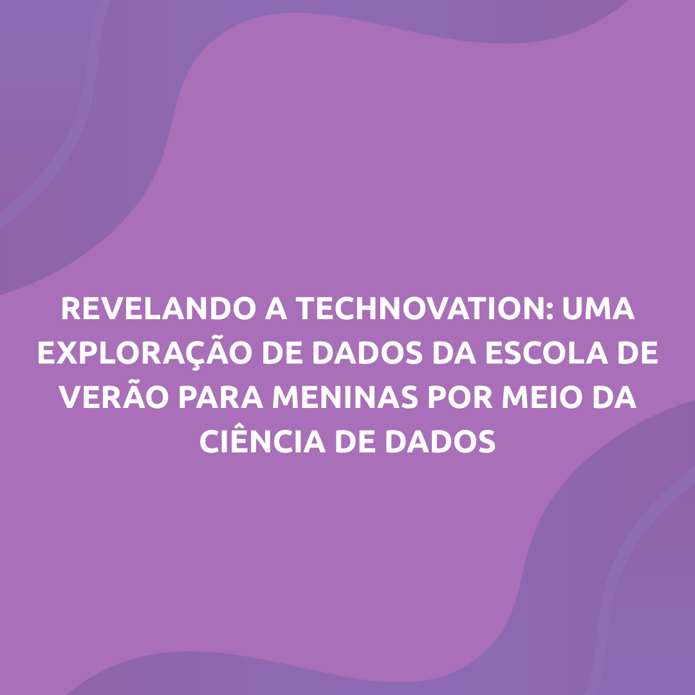

TechSchool 2026: Seu Futuro Começa Aqui!
As inscrições para a próxima edição estão abertas. Seja um monitor e lidere a inovação, ou garanta sua vaga no curso e transforme sua paixão por tecnologia em realidade. Junte-se a nós!
Inscreva-seMais que um Grupo, um Movimento.
No GRACE, unimos educação e comunidade para transformar o futuro das ciências exatas, uma menina de cada vez.
Conheça Nossa HistóriaSOBRE
QUEM SOMOS
O GRACE (GRupo de Alunas de Ciências Exatas) é um projeto de extensão do ICMC-USP (Instituto de
Ciências Matemáticas e de Computação da Universidade de São Paulo) em São Carlos, dedicado ao
desenvolvimento de atividades na área de tecnologia, com foco no público feminino da cidade de São Carlos
e região, especialmente estudantes dos níveis primário, secundário e superior.
Inserido no Programa Nacional Meninas Digitais da SBC, o GRACE busca incentivar instituições a promoverem
projetos que estimulem meninas do ensino fundamental e médio a se interessarem pela área de informática,
contribuindo para a redução da desigualdade de gênero na tecnologia.
NOSSA EQUIPE
CONHEÇA QUEM FAZ O GRACE ACONTECER
O GRACE é formado por uma equipe dedicada de professores, monitores, desenvolvedores e profissionais de diversas áreas, todos comprometidos em promover a inclusão de meninas e mulheres na tecnologia.
Conheça Nossa Equipe CompletaNOSSAS AÇÕES
PROJETOS QUE TRANSFORMAM VIDAS
Robótica na Escola
Levamos robótica educacional para escolas públicas, ensinando programação e pensamento lógico de forma prática e divertida.
Ciência de Dados para Ensino Médio
Introduzimos estudantes do ensino médio ao mundo da análise de dados, estatística e visualização de informações.
Escola de Web para Meninas
Curso intensivo de desenvolvimento web focado em meninas e mulheres, do básico ao avançado.
Pensamento Computacional
Desenvolvemos habilidades de resolução de problemas através de atividades lúdicas e desafios de lógica.
PESQUISAS
PUBLICAÇÕES CIENTÍFICAS

RESULTADOS
CONQUISTAS E RECONHECIMENTOS
GRACE NA MÍDIA
REPERCUSSÃO E COBERTURA


Veja mais de 10 publicações sobre o GRACE em diversos veículos de comunicação
Ver Todas as PublicaçõesPARCERIAS
CONSTRUINDO PONTES PARA INOVAÇÃO


FAQ
PERGUNTAS FREQUENTES
Para quem quer participar (Alunas e Pais)
O GRACE (Grupo de Alunas de Ciências Exatas) é um grupo de extensão do ICMC/USP focado em criar e desenvolver atividades que incentivem a participação feminina na área de tecnologia e ciências exatas.
Nosso público-alvo principal são meninas do ensino fundamental e médio. Dependendo da atividade, também abrimos vagas para alunas de graduação. Fique de olho em nossos eventos online, que são abertos a todos!
Sim! Todas as nossas atividades são 100% gratuitas. Somos um projeto de extensão da universidade, e nosso objetivo é promover a inclusão e o acesso ao conhecimento.
As inscrições para todas as nossas atividades são divulgadas em nossas redes sociais, principalmente no Instagram. Geralmente, o processo é feito através de um formulário online. Siga a gente para não perder nenhuma novidade!
De forma alguma! A grande maioria de nossos cursos e oficinas é pensada para iniciantes. Nosso objetivo é ensinar do zero de uma forma divertida e acolhedora.
Sim, geralmente emitimos certificados de participação para quem atinge a frequência mínima exigida em nossas atividades (normalmente 75% de presença).
Oferecemos os dois formatos! Temos atividades presenciais que ocorrem no campus da USP em São Carlos e também eventos e cursos online para alcançar mais pessoas. O formato de cada atividade é sempre informado na divulgação.
Para quem quer fazer parte do time
Que legal que você tem interesse! Nós geralmente abrimos processos seletivos para novas integrantes no início de cada semestre. Divulgamos todas as informações em nossas redes sociais. Fique de olho e venha fazer parte do time!
Nossas integrantes são a alma do projeto! Elas atuam em diversas frentes, como ministrar aulas, desenvolver material didático, organizar eventos, gerenciar nossas redes sociais e muito mais.
Para Escolas e Empresas (Parcerias)
Adoraríamos levar o GRACE até sua escola! Se você é representante de uma instituição de ensino, por favor, entre em contato conosco pelo nosso e-mail: grace@icmc.usp.br.
O apoio de empresas é fundamental para expandirmos nossas ações. Se sua empresa tem interesse em nos apoiar, entre em contato conosco pelo e-mail grace@icmc.usp.br para conversarmos.
CONTATO
FALE CONOSCO
Endereço
ICMC-USP - Instituto de Ciências Matemáticas e de Computação
Av. Trabalhador São-carlense, 400
Centro, São Carlos - SP, 13566-590
Telefone
(16) 3373-9700
grace@icmc.usp.br